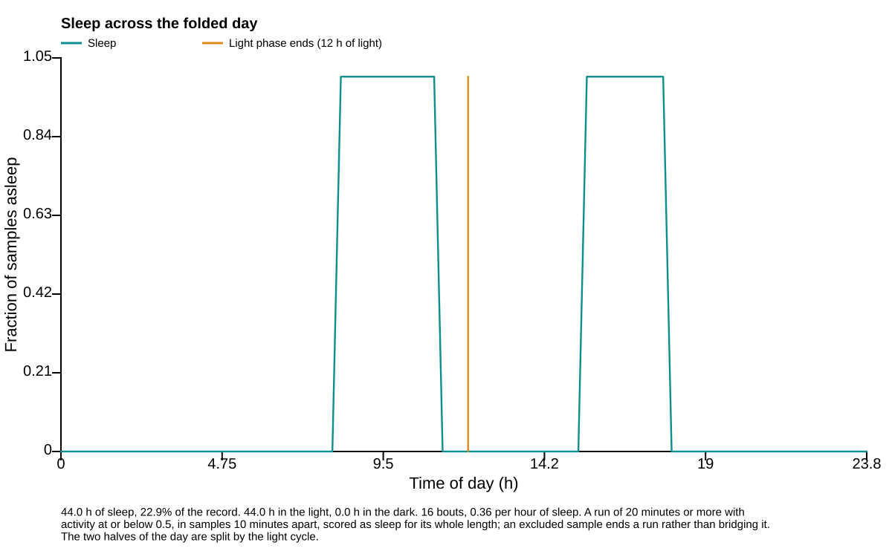

Score immobility sleep¶
Question¶
How much sustained immobility sleep occurred, and when?
See every package-generated example · Read the complete analysis pipeline
When to use¶
Use this when the sensor and sampling interval make sustained immobility a defensible proxy for sleep.
Example figure¶

This deterministic example is calculated by the sleep action and drawn by render_sleep_svg, the same renderer used for publication export. Empty or withheld elements are therefore visible exactly as they are in a real result.
import circadian_workbench as cw
cw.call("sleep", recording={"path": "mouse01.awd"})
Required inputs and controls¶
The public function is the registered action below. settings= is accepted as a friendlier alias for config= by cw.call; the calculation stores the complete normalized config in provenance.
Function reference¶
cw.call("sleep", recording, config=None)
Arguments and parameters¶
| Name | Type | Required | Default | Units | Meaning |
|---|---|---|---|---|---|
recording |
recording spec | yes | — | - | The record to analyse: {'path': 'data/m01.awd'} (a bare path string also works), {'demo': true} for the built-in deterministic record, {'inline': {'filename': ..., 'text': ...}} for tabular text, {'trace': {'hours': [...], 'values': [...], 'name': ...}} for one elapsed-time trace, or {'channels': {'hours': [...], 'values': {'reporter_a': [...], 'reporter_b': [...]}}} for several measurements from one subject. |
config |
object | no | null |
- | Partial analysis config. Missing keys fall back to analysis.DEFAULT_CONFIG and out-of-range values are clamped silently — run describe_config for every key, its default and its allowed values, or normalize_config to see what a given config actually becomes. |
Every nested config key, default, allowed value, and purpose is listed in the complete configuration reference.
How it works¶
Consecutive bins at or below the activity threshold are scored as sleep only when the run reaches the minimum immobility duration. Movement and excluded or missing bins break a run.
$$ N_{\min}=\left\lceil\frac{t_{\mathrm{immobility}}}{\Delta t}\right\rceil $$
Implementation: sleep.py::immobility_sleep.
Outputs and interpretation¶
The result contains the binary sleep mask, episodes, hourly profile, daily totals, light/dark summaries, bout duration, fragmentation, coverage, and scoring settings.
cw.call returns a Result: use .data for calculated values, .warnings for scientific qualifications, .provenance for version and input identity, .script for an equivalent replay script, and .files for saved outputs.
Limitations¶
Immobility is not electroencephalographic sleep. Missing data are not inactivity, and the scorer deliberately does not bridge movement or excluded samples.
Example¶
The figure above is a real package result from a seeded, redistributable synthetic dataset. Its audited project bundle retains figure_data.csv, a standalone plot.py, source hashes, an editable SVG, and a rendered preview.
Methods text¶
Sleep was operationally defined as uninterrupted activity at or below the declared threshold for at least the configured immobility duration; movement, missing values, and exclusions broke each run.
See also¶
Measure food anticipation · Find ultradian rhythms · Test temperature compensation · Analysis index · Gallery